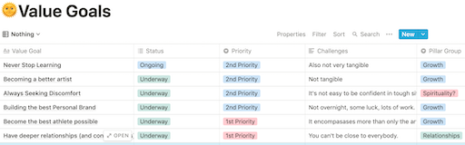
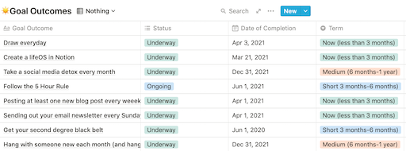

The two types of goals:
Abstract Goals
These are most of my abstract goals.
When first trying to approach your desires in life, you'll probably come across this type first. These goals are solely a dream with no ways to progress on it. Things like, "I want to be a better artist," or "I want to be more confident". Despite the abstractness of these goals, they are essential. So, pull out a pen and paper, or your computer, and write down as many of these as you can think of. For now, remember,
without disorder, there is no order.
Specific Goals
From my abstract goals, these are the specific goals.
The next order of magnitude more specific is known under many names, SMART goals, goal outcomes, or specific goals. These should have an outcome which you would like to achieve like, "I want to run a 6 minute mile," or "I want to bench press 250 pounds." These can and should be specified even more if progress is to be made. Importantly, there should be a date when the goal should be completed by, a priority, and then go into ways to progress on the goal. Some of main goals are just reminders, like to follow the 5 hour rule (Which I talk more about on my newsletter, that you should subscribe to. Just click on this text to join!), but most have progress that I would like to keep up on. Whether through projects or a daily habit, the weekly and monthly reviews is where the progess is managed and reflected on.
Weekly Reviews
The weekly review is where you check to make sure you are on track with your progress. My weekly review has three main parts, all of them more spread out versions of things I did in my Daily Journal (Haven't read that article yet? Click here to see it!)Here are the three main parts:
- Updating my main goals
- What I've learned that week
- The Most Important thing to complete for the next week
First, the update
For me, I have specific questions relating to my tangible main goals. Personally, this is updating on my relationship, my newsletter and blog, as well as updating on the daily review and if I completed it to my liking each day. You will have to change the questions to fit your desires.
What I've learned that week
This section relies completely on the daily review. While I don't learn something monumental each day, I strive for at least two to three concepts per week, to find these, I just look at my daily journals. Then, I collect all of these in a database to be looked at the end of the year, seen below
The Most Important thing
Much like in the daily journals, I have one major item that I would like to acomplish in the next week. Importantly, if I complete this, then that week will be successful, no matter if I didn't feel great about anything else. This is as much about lifting your spirits as it is creating momentum for the week.
Monthly Reviews
The monthly review looks over the entire system of goals and not only checks in on the progress you've made, but the goals themselves. It is less of a check-in and closer to a reset. My monthly review has three main parts:
- Major Progess Update
- The Systems + Goals Themselves
- Improvements and Reflections
Checking in on the progress is quite straightforward, I haave written out all of my abstract goals, and then write a small amount about what I've done to try to complete them. I then say how I feel about the progress, and what I would like to accomplish in the next months.
The Goals + Systems to accoplish them
I then determine if any goals are not aligned with my values or are lagging behind where they should be. In most cases, the goals require a minor change, but, especially if this month has been formative or had some unexpected event, it's possible something has fallen by the wayside, or is just not in your priorities at all. You can either archive this goal for later, or you can go ahead and scrap it. There is no change in changing your goals, that is just what living does. As Bruce Lee said, and needs repeating,
"I am means...life is a process not a goal."
Improvements and Reflections
Finally, the most important part of the monthly review, the actual reflection. Without, well, reviewing, the past month, there is no way to use what you have learned. You can try to read and listen to everything, but learning also requires internalization, which does not happen without practice and reflection. I ask myself a few questions,
First, if I had 10 years to live, what would I nothave done this month?
I am newly experimenting with this one, which has come through many hours of podcasts. I try to culminate the classic urgency of death, with the idea of not being able to change the past. With only one year to live, people usually answer to travel the world, but with ten years, it is more likely you don't have enough savings to stop work. Thus, this really distills what you wish you would have done in relationship to bettering your future as well as your present self.
Next, How can I make next month awesome?
I may sound like a broken record now, but this is another variation of the most important thing to do today, this week, and now, next month. It is not as if I will only do this thing, but it is good to look back and see not only if you have completed that one thing, but if that is still one of your priorities now, or if they've changed. It can be a good indicator on if your goals are truly aligned with your values.
Closing Thoughts:
Whew. I hope that wasn't too daunting. Don't feel this is all necessary to do once you have started to journal every day. Just for me personally, once I started to track my feelings and days, the desire to improve and the goals just sort of came through automatically. And, this is the way I have developed to sort through my thoughts and find out what truly matters and to actually progress on them. If you've read this far, thanks! Please keep reading and email me at 23Samuelb@lrei.org with any comments and questions (which are greatly appreciated!). Have fun journaling!